Tosca
HESSISCHES STAATSTHEATER WIESBADEN
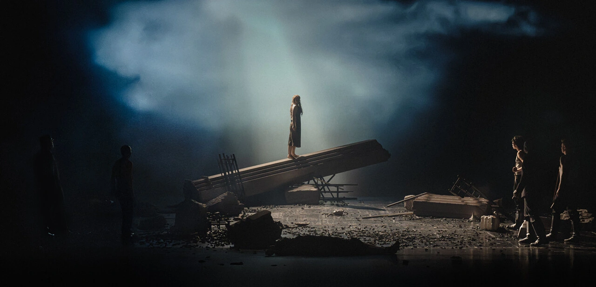
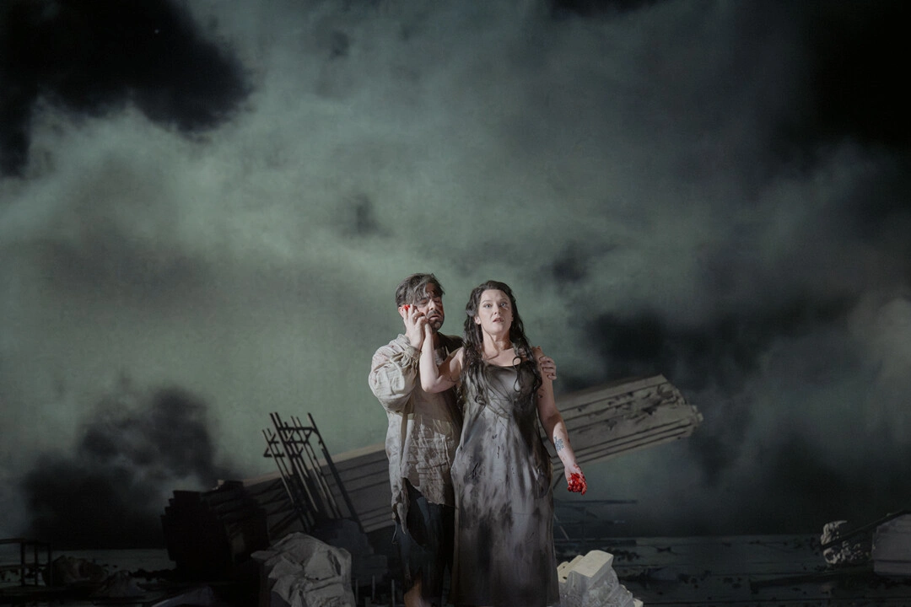
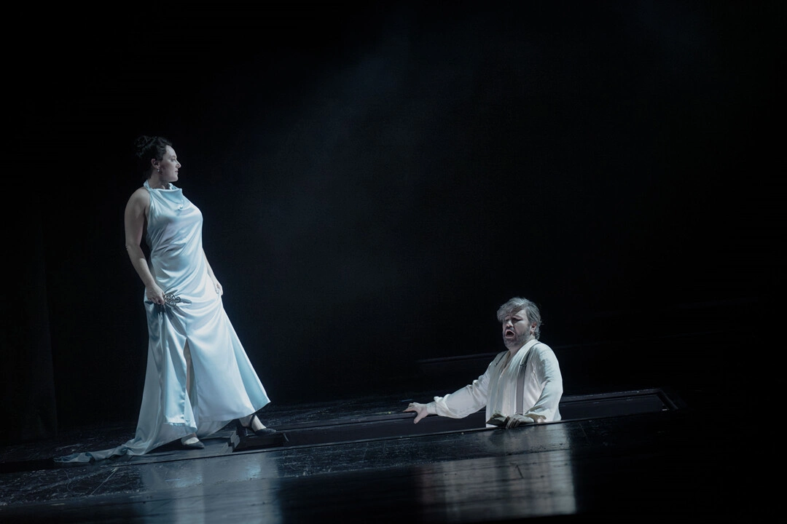
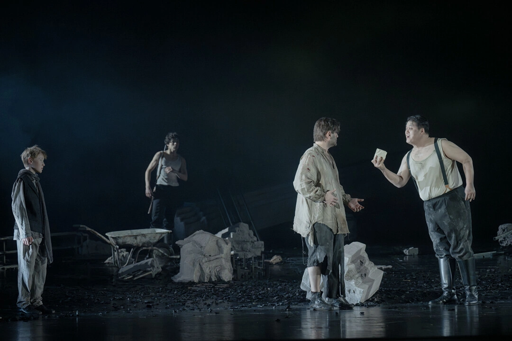
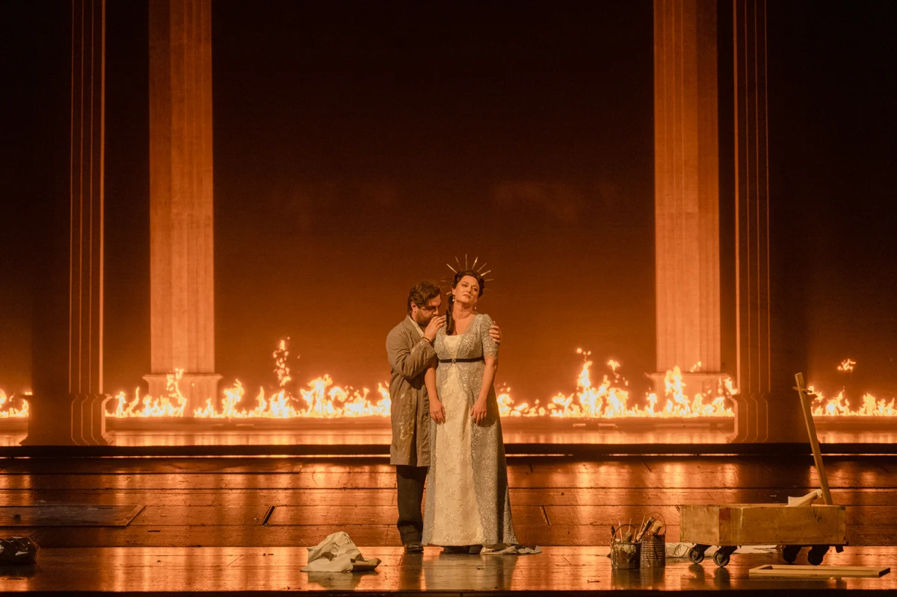
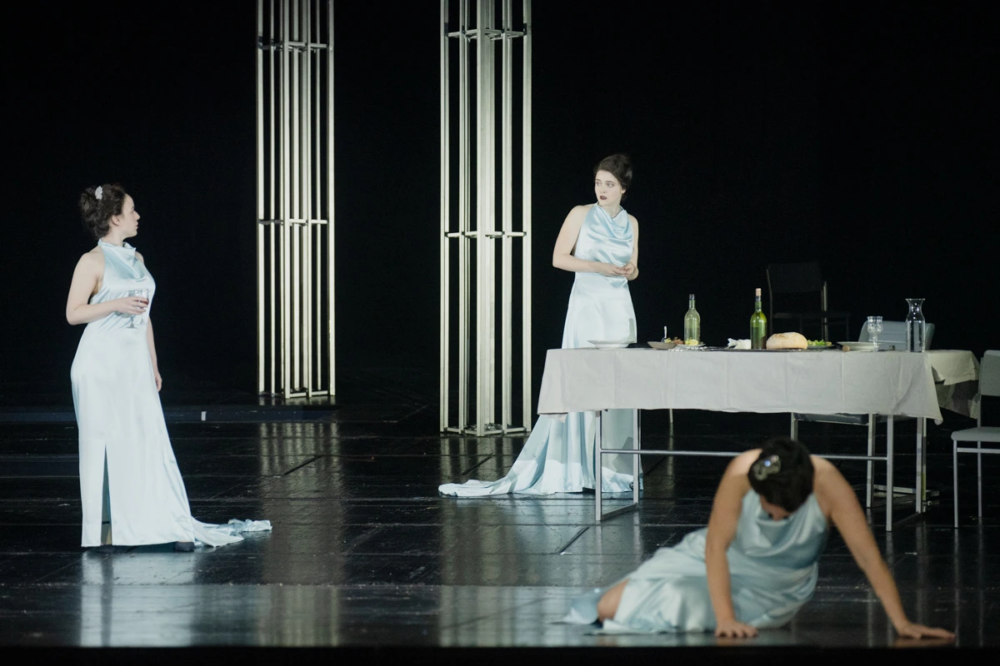
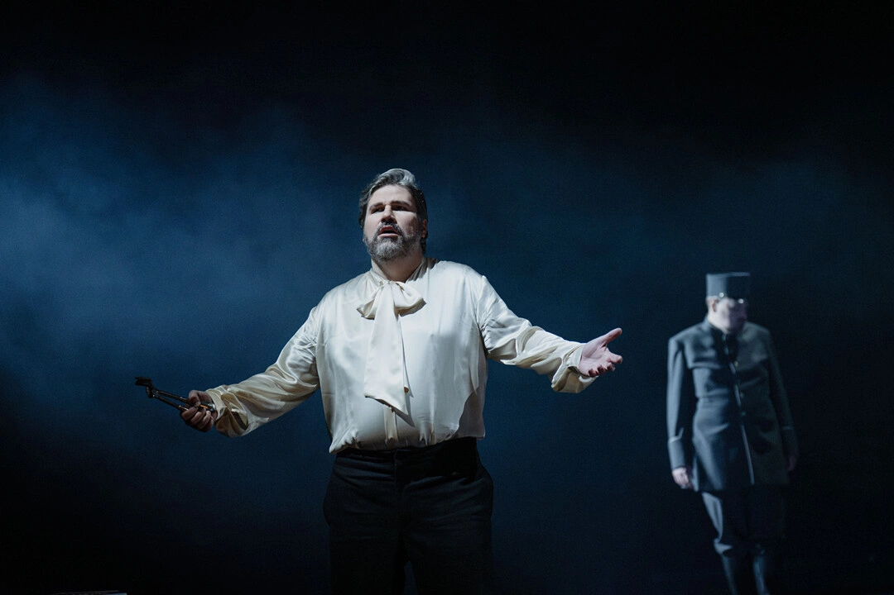
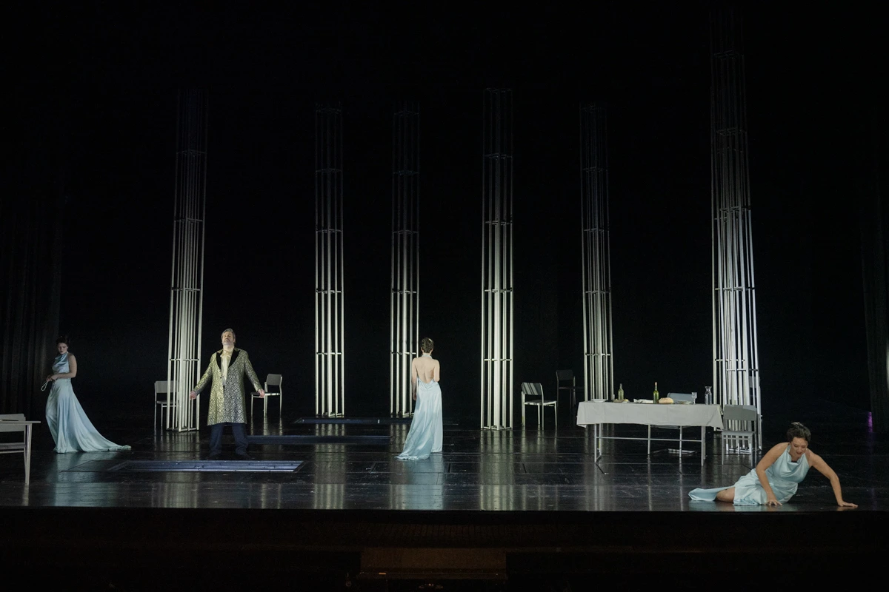
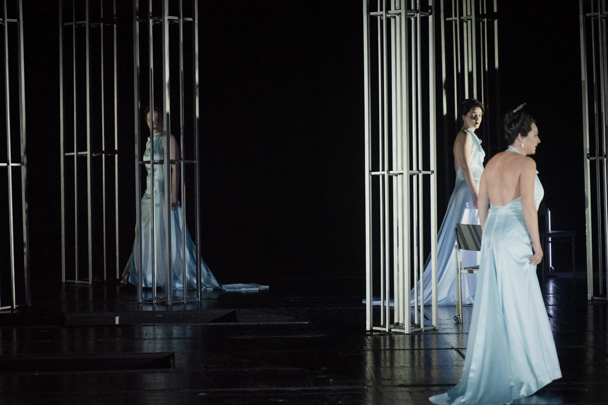
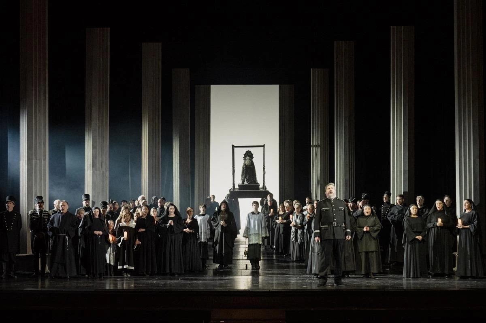
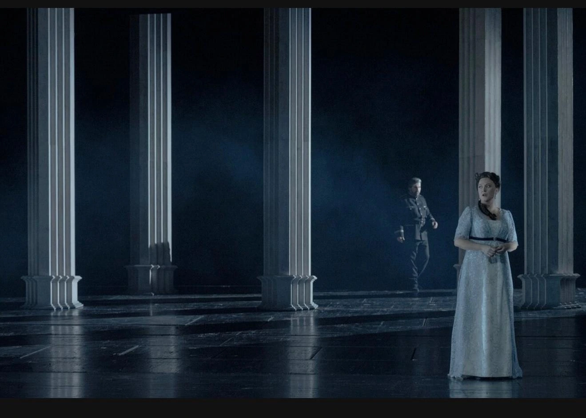
Musikalische Leitung: Chin-Chao Lin/Albert Horne
Inszenierung: José Cortés
Bühnenbild: Manuel La Casta
Kostüm: Linda Rodenheber
Licht/Video: Martin Siemann
Licht: Marcel Hahn
Chor: Albert Horne
Kinder- und Jugendchor: Niklas Sikner
Dramaturgie: Balthazar Bender
Vermittlung: Oliver Riedmüller
Regieassistenz: Kilian Bohnensack
Regiehospitanz: Yvonne Sembene
Musikalische Assistenz: Holger Reinhardt
Musikalische Einstudierung: Tim Hawken/Julia Palmova/Adam Rogala/Miyeon Eom
Bühenbildhospitanz: Anna Haufe
Bühnenbildassistenz: Mascha Dilger
Kostümassistenz: Dea Bejleri
Floria Tosca: Sinéad Campbell Wallace
Mario Cavaradossi: Otar Jorjikia/Stefano La Colla
Baron Scarpia: Massimo Cavalletti/Lucio Gallo
Cesare Angelotti: Jonathan Macker
Der Messner: Fabian-Jakob Balkhausen
Spoletta: Jochen Elbert
Sciarrone: James Young
Ein Schließer: Wooseok Shim
Ein Hirt: Sarah Yang/Inna Fedorii
Chor: Chor des Hessischen Staatstheaters Wiesbaden/Extrachor des Hessischen Staatstheaters Wiesbaden/Jugendkantorei der Evangelischen Singakademie Wiesbaden
Orchester: Hessisches Staatsorchester Wiesbaden
Statisterie: Statisterie des Hessischen Staatstheaters Wiesbaden